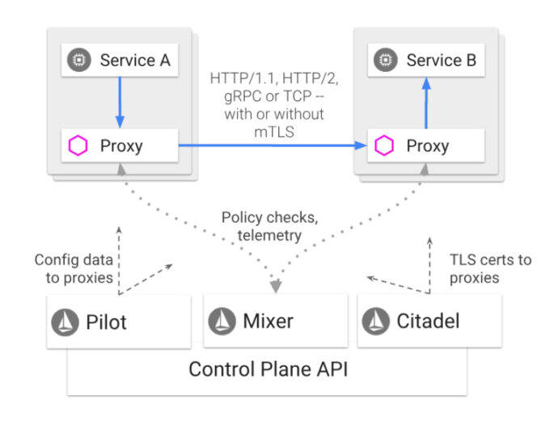
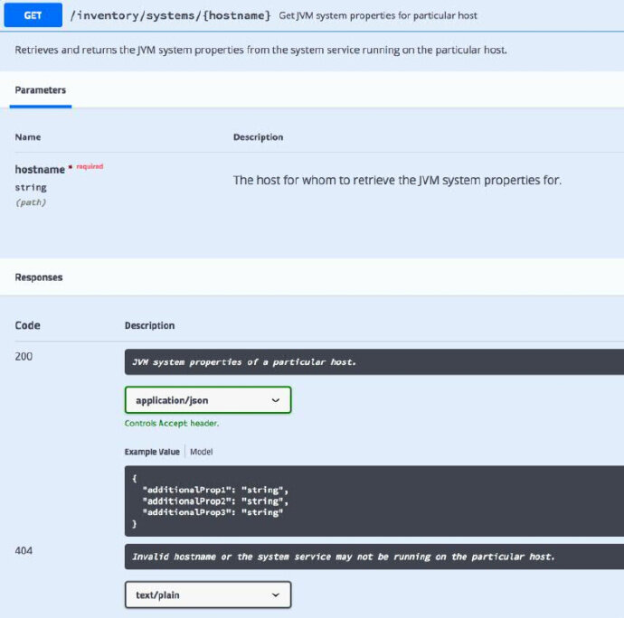
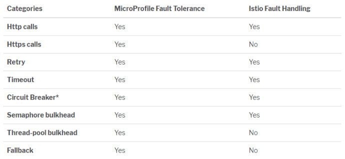
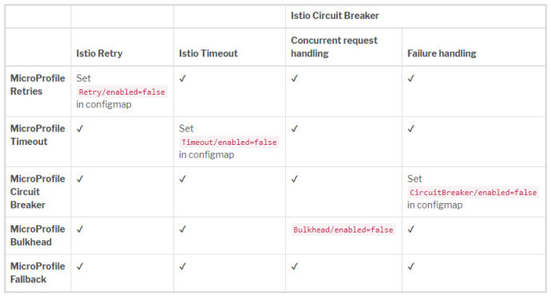
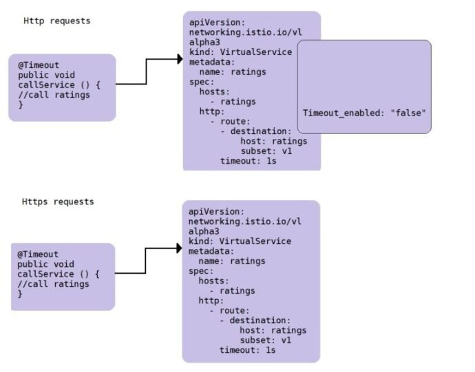

本文为翻译文章，点击查看原文。
编者按
如果说Spring Cloud是以SpingBoot为核心和基础的微服务架构，那么MicroProfile则是将传统JavaEE轻量化以适应微服务时代的一个体系。作者Emily Jiang，开源项目eclipse/microprofile的contributor之一，在本文中探讨了如何结合MicroProfile与流行的服务网格Istio安全地部署微服务，比较了二者的不同之处，并且阐述了二者共存的生态系统的现状及未来。
MicroProfile in a nutshell
MicroProfile是一个快速发展的开源社区。它是一个热情友好的平台，可以让开发人员聚在一起为云原生微服务开发编程模型。自2016年6月成立以来，不到两年的时间里，它已经发布了6个总体版本和16个单独的规范版本。 [此页](https://wiki.eclipse.org/MicroProfile/Implementation# eclipse_microprofile_versions)显示了哪个应用服务器支持哪个版本的MicroProfile。Open Liberty被视为MicroProfile的主要实现之一，并决心快速实现MicroProfile的最新版本。
以下是每种规格的最新状态:
- MicroProfile Config 1.3
- MicroProfile Fault Tolerance 1.1
- MicroProfile Health Check 1.0
- MicroProfile Metrics 1.1
- MicroProfile Open API 1.0
- MicroProfile Open Tracing 1.1
- MicroProfile JWT 1.1
- MicroProfile Rest Client
以下几种规格正在进行中:
- MicroProfile Reactive Streams Operators
- MicroProfile Reactive Messaging
- MicroProfile LRA (Long Running Action)
- MicroProfile Concurrency
使用MicroProfile创建的cloud-native微服务可以自由部署在任何地方，包括服务网格架构，例如Istio。在本文中，我们将探讨如何在Istio平台上使用MicroProfile实现微服务。让我们简单地看一下Istio。
Istio in a nutshell
云原生微服务非常适合部署到云基础设施上。当有许多微服务时，需要协调微服务之间的通信。业务流程由所谓的服务网格(service mesh)管理，它是一个专用的基础设施层，使服务到服务的通信快速、安全、可靠。它还提供了服务发现、负载均衡、故障恢复、度量和监视。它还可能包括A/B测试、金丝雀发布等等。
Istio 是最流行的服务网格，旨在连接、管理和安全化微服务。它是一个开源项目，拥有活跃的社区，由IBM、Google和Lyft启动。Istio 1.0于2018年7月底发布。
Istio提供了以下核心功能:
- 流量管理:
- HTTP, gRPC, WebSocket和TCP流量的自动负载均衡。
- 使用丰富的路由规则、重试、故障转移和故障注入对流量行为进行细粒度控制。
- 支持访问控制、速率限制和配额的可插入策略层和API配置。
- 监控
- 集群内所有流量的自动度量、日志和跟踪，包括集群的入口和出口。
- 安全
- 在具有强大的身份验证和授权的集群中实现安全的服务间通信。
Istio是独立于平台的，设计用于在各种环境中运行，比如Kubernetes、Mesos等。本文主要研究Kubernetes下的Istio。
Istio由一个数据平面和一个控制平面组成 (Istio架构见下图，取自Istio .io)。

MicroProfile meets Istio
如上一节所述，MicroProfile提供
- Config
- Fault Tolerance: Retry, Circuit Breaker, Bulkhead, Timeout, Fallback
- Health Check
- Metrics
- Open API
- Open Tracing
- Rest Client
- JWT
Istio能够做到:
- Fault Tolerance: Retry, Circuit Breaker, Limits on concurrent connections or requests, Timeouts
- Metrics
- Open Tracing
- Fault Injection
乍一看，有一些重叠。接下来，让我们看看每个单独的MicroProfile规范，并研究如何在Istio中使用它们。
MicroProfile config in Istio
MicroProfile Config提供了一个外部化配置的解决方案。默认配置源包括路径上的环境变量、系统属性和microprofile-config.properties文件。
Kubernetes配置映射中定义的属性可以通过envFrom功能转换为环境变量，如下所示。
kind: ConfigMap
apiVersion: v1
metadata:
name: example-config
namespace: default
data:
EXAMPLE_PROPERTY_1: hello
EXAMPLE_PROPERTY_2: world
# Use envFrom to load ConfigMaps into environment variables
apiVersion: apps/v1beta2
kind: Deployment
metadata:
name: mydeployment
labels:
app: servicea
spec:
replicas: ``1
selector:
matchLabels:
app: servicea
template:
metadata:
labels:
app: servicea
spec:
containers:
- name: app
image: microprofile/servicea/latest
imagePullPolicy: Always
ports:
- containerPort: ``80
envFrom:
- configMapRef:
name: example-config
配置映射中指定的配置属性可以通过MicroProfile配置api自动注入到微服务中。
@ApplicationScoped
public class Demo {
@Inject
@ConfigProperty``(name=``"example.property.1"``)
String myProp1;
@Inject
@ConfigProperty``(name=``"example.property.2"``)
String myProp2;
public` `void` `echo() {
System.out.println(myProp1 + myProp2);
}
}
注意: 您可能已经注意到，在上面的Istio配置规则中，configmap定义了属性EXAMPLE_PROPERTY_1 EXAMPLE_PROPERTY_2 然而, 上面的代码片段寻找属性 example.property.1 和example.property.2。为什么呢？这是怎样工作的呢？
在IEEE Std 1003.1-2001的Shell和实用程序卷中，实用程序使用的环境变量名仅由大写字母、数字和可移植字符集中定义的字符中的“_”(下划线)组成，不以数字开头。实现可以允许其他字符；应用程序应容许这些名称的存在。有些shell可能只支持字母、数字和下划线，比如Ubuntu。
MicroProfile Config 1.3 以后直接映射任何非字母数字字符 (e.g. “.”, 在某些操作系统中是无效的环境变量) 到 _。 在这个例子中，在configmap里，属性名是 EXAMPLE_PROPERTY_1 EXAMPLE_PROPERTY_2，而这正是 example.property.1和example.property.2的映射名。
MicroProfile health check in Istio
在服务网格体系结构中，Kubernetes集群中的每个pod都有一个生命周期。Kubernetes需要知道何时杀死pod, Istio需要知道何时将请求路由到pod。总之，了解每个pod的健康状况是必要的。pod的健康状况是通过活性(Liveness )和准备度(Readiness)来测量的。
Liveness
许多微服务运行很长时间，最终可能会过渡到中断状态。因此，除非重新启动，否则无法恢复。这就是生命周期。
Readiness
有时，微服务暂时无法对外提供服务。例如，微服务可能需要在启动期间加载大型数据或配置文件。
MicroProfile 的健康检查表示微服务是live或者ready。它对外暴露了一个端点 /health. 调用这个端点会返回 UP (healthy)或DOWN (unhealthy)。
Health Check of microservices in Istio
服务网格(如Istio)可以利用下层组件(如Kubernetes)的就绪状态和活动状态。Kubernetes提供活性探针或准备探针来检测和纠正这种情况。Kubernetes可以经常检查pods。如果被检查的pod不是存活的，它将摧毁这个pod并创建一个新的。如果应用程序还没有准备好，Kubernetes不想杀死它，但也不会给它发送请求。
Istio中的微服务可以利用MicroProfile Health公开的端点作为其活性探针，从而使Kubernetes能够控制是否摧毁pod。下面是活性探针的配置。任何大于或等于200且小于400的返回代码都表示成功。任何其他代码都表示失败，而失败将导致pod被销毁。
livenessProbe:
exec:
command:
- curl
- -f
- http: //localhost:8080/health
initialDelaySeconds: 10
periodSeconds: 10
MicroProfile metrics in Istio
MicroProfile Metrics提供了一种将遥测技术导出到管理代理和api的统一方法，微服务开发人员可以使用这些代理和api添加遥测数据。例如，下面的指标将保存库存中的系统数量。
@Gauge(unit = MetricUnits.NONE, name = "inventorySizeGuage", absolute = true, description = "Number of systems in the inventory")
public int getTotal() {
return invList.getSystems().size();
}
MicroProfile metrics将能够提供特定于应用程序的指标，而不仅仅是Istio能够获得的指标。它是对遥测技术的补充。
MicroProfile Open API in Istio
在服务网格中，重要的是查看每个服务的功能，以便发现该服务。MicroProfile OpenAPI的目的是提供一组Java接口和编程模型，允许Java开发人员为他们的JAX-RS应用程序原生地生成OpenAPI v3文档。
@GET
@Path("/{hostname}")
@Produces(MediaType.APPLICATION_JSON)
@APIResponses( value =
{
@APIResponse( responseCode = "404", description = "Missing description", content = @Content(mediaType = "text/plain")),
@APIResponse( responseCode = "200", description = "JVM system properties of a particular host.", content = @Content(mediaType = "application/json", schema = @Schema(implementation = Properties.class)))
})
@Operation( summary = "Get JVM system properties for particular host",
description = "Retrieves and returns the JVM system properties from the system " + "service running on the particular host.")
public Response getPropertiesForHost(
@Parameter( description = "The host for whom to retrieve the JVM system properties for.", required = true, example = "foo", schema = @Schema(type = SchemaType.STRING)) @PathParam("hostname") String hostname) {
// Get properties for host
Properties props = manager.get(hostname);
if (props == null) {
return Response.status(Response.Status.NOT_FOUND)
.entity("ERROR: Unknown hostname or the system service may "
+ "not be running on " + hostname)
.build();
}
//Add to inventory to host
manager.add(hostname, props);
return Response.ok(props).build();
}
这些API可以通过这个端点查看 /openapi/ui

这个规范为Istio提供了一个很好的补充，因为DevOps可以使用它来查找每个JAX-RS端点的详细信息。
MicroProfile Open Tracing in Istio
在服务网格体系结构中，一个基本的需求是追踪服务调用。从客户端到最终服务的完整请求链将有助于可视化服务调用跳转。如果出了问题，这可以用来识别和定位出错的服务。
MicroProfile Open Tracing 有助于实现这一目标。该规范定义了用于访问JAX-RS微服务中遵循OpenTracing的跟踪器对象的行为和API。所有传入和传出的请求都将自动创建OpenTracing span。它与跟踪器实现(Zipkin或Jaeger)一起工作。Istio提供Jaeger，也可以与Zipkin协作。
Istio要求微服务传播以下7个头文件，这7个头文件由MicroProfile Open Tracing自动传播，从而避免了微服务开发人员编写样板代码。
x-request-idx-b3-traceidx-b3-spanidx-b3-parentspanidx-b3-sampledx-b3-flagsx-ot-span-context
MicroProfile JWT in Istio
保证服务到服务通信的安全是服务网格体系结构中的基本要求。MicroProfile JWT定义了一种保护服务到服务通信的方法，与RESTful安全性密切相关。将安全状态从客户端传播到服务端、从服务端传播到服务端的主要策略之一包含使用安全令牌。该令牌使用了基于OpenID Connect 的JSON Web Tokens (JWT) 来对微服务端点进行基于角色的访问控制(RBAC)。MicroProfile JWT令牌用于对JSR-250中定义的@RolesAllowed、@PermitAll、@DenyAll上的用户角色进行身份验证和授权。
// The JWT of the current caller. Since this is a request scoped resource, the
// JWT will be injected for each JAX-RS request.
@Inject
private JsonWebToken jwtPrincipal;
@GET
@RolesAllowed({ "admin", "user" })
@Path("/username")
public Response getJwtUsername() {
return Response.ok(this.jwtPrincipal.getName()).build();
}
Istio security提供两种类型的认证:
- 传输身份验证 (service-to-service authentication): 验证使用mutual TLS作为传输身份验证的完整堆栈解决方案进行连接的直接客户机。这可以在不更改任何微服务代码的情况下使用。
- 源认证 (end-user authentication): 验证作为最终用户或设备发出请求的原始客户端。它只支持JWT源身份验证。Istio可以通过MicroProfile JWT身份验证添加额外的身份验证和拦截。如果微服务没有嵌入安全性，则可以使用原始身份验证。
MicroProfile Rest Client in Istio
在Istio中，服务到服务的通信通常通过JAX-RS进行。JAX-RS的一个问题是缺乏类型安全客户端。为了解决这个问题，MicroProfile Rest客户端定义了一个类型安全的客户端编程模型，并为配置错误的JAX-RS客户端提供了更好的验证。
@Dependent
@RegisterRestClient
@Path("/properties")
public interface SystemClient {
end::annotations[]
@GET
@Produces (MediaType.APPLICATION_JSON)
public Properties getProperties() throws UnknownUrlException, ProcessingException;
}
上面的代码片段根据SystemClient接口中定义的内容自动构建和生成客户端的实例，该接口自动设置客户端实例并与远程服务连接。
当调用getProperties()方法时，SystemClient实例向/properties端点发送一个GET请求。
@ApplicationScoped
public class InventoryManager {
@Inject
@RestClient
private SystemClient defaultRestClient;
public Properties get(String hostname) {
try {
return defaultRestClient.getProperties();
} catch (UnknownUrlException e) {
System.err.println("The given URL is unreachable.");
} catch (ProcessingException ex) {
handleProcessingException(ex);
}
return null;
}
}
注解@Inject和@RestClient将一个名为defaultRestClient的SystemClient实例注入到InventoryManager类中，这是一个类型安全的客户端。
该规范被微服务使用，并且不涉及任何其他内容。因此，它与Istio没有直接的交互作用，也没有冲突。
MicroProfile Fault Tolerance in Istio
构建弹性微服务是微服务设计的关键。Eclipse MicroProfile Fault Tolerance提供了一个简单灵活的解决方案来构建容错微服务，且易于使用和配置。它提供了以下容错策略:
- Timeout: 定义超时的时长。
- Retry: 定义何时重试的标准。
- Bulkhead: 隔离部分系统出现的故障，而系统的其余部分仍能正常工作。
- CircuitBreaker: 提供一种fail fast的方法，自动执行失败策略，以防止系统过载和客户端不停的等待或超时。
- Fallback: 为失败的执行提供替代解决方案。
设计主要的目标是将执行逻辑从执行中分离出来。可以用容错策略来配置执行。
Istio也定义了一组opt-in故障恢复特性，包括:
- 超时
- 有界重试超时预算和重试之间的变量抖动
- 限制对上游服务的并发连接和请求的数量
- 细粒度断路器(被动健康检查) — 应用于负载均衡池中的每个实例
Istio的故障恢复是通过Envoy代理来协调出站流量，例如复制请求等。但是，它不能操作任何安全调用，例如https请求。
让我们将MicroProfile Fault Tolerance与Istio的故障处理进行比较。

MicroProfile Fault Tolerance Circuit Breaker 为客户端所有，客户端之间不共享；Istio断路器为后端服务所有，这意味着多个连接可以构成一个Circuit Breaker。
让我们通过研究每个策略来更详细地比较二者的故障处理。
Timeout
对于超时，MicroProfile Fault Tolerance使用@Timeout注释指定超时时间。
@Timeout(400) // timeout is 400ms
public void callService() {
//calling ratings
}
Istio使用以下配置规则来指定超时时间。
apiVersion: networking.istio.io/v1alpha3
kind: VirtualService
metadata:
name: ratings
spec:
hosts:
- ratings
http:
- route:
- destination:
host: ratings
subset: v1
timeout: 10s
如果同时指定了Istio超时和MicroProfile容错超时，那么当发生故障时，将触发这两种超时中最严格的超时设置。
Retry
如何处理不稳定的服务？重试是增加成功几率的显而易见的选择。MicroProfile使用@Retry指定重试。
/**
* The configured the max retries is 90 but the max duration is 1000ms.
* Once the duration is reached, no more retries should be performed,
* even through it has not reached the max retries.
*/
@Retry(maxRetries = 90, maxDuration= 1000)
public void callService() {
//calling rating;
}
/**
* There should be 0-800ms (jitter is -400ms - 400ms) delays
* between each invocation.
* there should be at least 4 retries but no more than 10 retries.
*/
@Retry(delay = 400, maxDuration= 3200, jitter= 400, maxRetries = 10)
public Connection serviceA() {
return connectionService();
}
/**
* Sets retry condition, which means Retry will be performed on
* IOException.
*/
@Timeout(400)
@Retry(retryOn = {IOException.class})
public void callRating() {
//call ratings;
}
Istio使用下面的配置规则来指定重试。
apiVersion: networking.istio.io/v1alpha3
kind: VirtualService
metadata:
name: ratings
spec:
hosts:
- ratings
http:
- route:
- destination:
host: ratings
subset: v1
retries:
attempts: 3
perTryTimeout: 2s
上面的配置规则可以简单地通过 @Retry(maxRetries=3, delay=2, delayUnit=ChronoUnit.SECONDS)映射到MicroProfile Fault Tolerance Retry
当同时指定MicroProfile容错重试和Istio重试时，微服务将最终将重试次数相乘。 例如，如果MicroProfile Fault Tolerance指定了3次重试，而Istio指定了3次重试，那么最大重试将是9次(3×3)。 不要恐慌。继续读下去。MicroProfile Fault Tolerance已经提出了一种解决方案。
Bulkhead
MicroProfile Bulkhead提供两种不同类型的bulkhead:
- 线程隔离
- 通过注释
Asynchronous和Bulkhead，使用有固定数量线程和等待队列的线程池。
- 通过注释
// maximum 5 concurrent requests allowed, maximum 8 requests allowed in the waiting queue
@Asynchronous
@Bulkhead(value = 5, waitingTaskQueue = 8)
public Future <Connection> serviceA() {
Connection conn = null;
conn = connectionService();
return CompletableFuture.completedFuture(conn);
}
- 信号隔离
- 限制并发请求的数量
@Bulkhead(5) // maximum 5 concurrent requests allowed
public Connection serviceA() {
Connection conn = null;
conn = connectionService();
return conn;
}
Istio可以使用断路器配置规则来配置连接池，从而限制并发请求的数量。下面的规则表明，如果您同时触发超过一个连接和请求，那么当isti -proxy打开电路以接收更多的请求和连接时，您应该会看到报错信息。
apiVersion: networking.istio.io/v1alpha3
kind: DestinationRule
metadata:
name: httpbin
spec:
host: httpbin
trafficPolicy:
connectionPool:
tcp:
maxConnections: 1
http:
http1MaxPendingRequests: 1
maxRequestsPerConnection: 1
Circuit breaker
断路器(Circuit Breaker)是创建弹性微服务的重要模式。它可以通过立即拒绝请求来防止重复超时。 MicroProfile Fault Tolerance使用@CircuitBreaker来控制客户端调用。
@CircuitBreaker(successThreshold = 10, requestVolumeThreshold = 4, failureRatio= 0.75, delay = 1000)
public` `Connection serviceA() {
Connection conn = ``null``;
conn = connectionService();
return` `conn;
}
上面的代码片段表示方法serviceA应用断路策略。对于最后4次调用，如果75%失败(即4次调用中有3次失败)，则打开电路。电路将保持打开状态1000毫秒，然后回到半打开状态。连续成功调用10次后，电路将再次关闭。当电路打开时，将抛出一个CircuitBreakerOpenException，而不是实际调用该方法。
Istio使用断路器规则来限制故障、延迟峰值和其它网络问题带来的的不良影响。
下面的规则设置连接池大小为100个连接和1000个并发HTTP2请求，与“reviews”服务的连接不超过10个请求/连接。此外，它将上游主机配置为每5分钟扫描一次，这样任何连续7次失败的主机都将被弹出15分钟。
apiVersion: networking.istio.io/v1alpha3
kind: DestinationRule
metadata:
name: reviews-cb-policy
spec:
host: reviews.prod.svc.cluster.local
trafficPolicy:
connectionPool:
tcp:
maxConnections: 100
http:
http2MaxRequests: 1000
maxRequestsPerConnection: 10
outlierDetection:
consecutiveErrors: 7
interval: 5m
baseEjectionTime: 15m
如你所见，Istio CircuitBreaker同时覆盖了bulkhead和circuit breaker的部分功能。上述配置可以转换为以下MicroProfile Fault Tolerance。
@Bulkhead(1000) @CircuitBreaker(requestVolumeThreshold=7, failureRatio=1.0, delay=15, delayUnit=ChronoUnit.MINUTES)
MicroProfile和Istio的断路器(Circuit Breaker)是不同的。在MicroProfile Fault Tolerance中，策略被放置在客户机上，因为策略控制出站请求。Istio将策略放置在目的地上，因此多个客户端可以对同一个断路器做出贡献。
Fallback
MicroProfile Fault Tolerance或Istio Fault Tolerance是在这里增加成功的机会。然而，在现实中，他们不能保证100%的成功率。你还需要想出一个应急计划。请求失败了怎么办？ MicroProfile Fault Tolerance的Fallback这时候就能力挽狂澜了。
Istio Fault Tolerance不提供任何fallback功能。这是有意义的，因为只有程序开发人员可以决定应急计划，这需要业务背景知识。
MicroProfile Fault Tolerance通过@Fallback注释提供了强大的fallback功能。
在下面的代码片段中，当方法失败并重试达到最大重试时，将执行回退操作。在本例中，它只返回一个字符串。您可以选择调用不同的备份服务。
@Retry(maxRetries = 2)
@Fallback(fallbackMethod= "fallbackForServiceB")
public String serviceB() {
counterForInvokingServiceB++;
return nameService();
}
private String fallbackForServiceB() {
return "myFallback";
}
当前生态系统
当你读到这里，你可能会想：
Q: 我可以同时使用MicroProfile Fault Tolerance fallback和Istio故障处理吗? A: 是的，您可以只使用@Fallback注释。 这是一个简单的生态系统。让我们走得更远。
Q: 如果我想在开发和测试中使用MicroProfile容错，但是当它被部署到Istio时，我想使用Istio错误处理怎么办？ A: 由于MicroProfile Fault Tolerance提供的配置MP_Fault_Tolerance_NonFallback_Enabled，您可以在configmap中以false的值配置此属性，这将禁用MicroProfile容错功能(Fallback除外)。
apiVersion: v1
kind: ConfigMap
metadata:
name: servicea-config
data:
MP_Fault_Tolerance_NonFallback_Enabled: "false"
这个生态系统仍然是基本的，因为它直接禁用了MicroProfile Fault Tolerance(Fallback除外)。微服务开发人员错误处理知识完全被抛弃。DevOps必须从头开始创建Istio配置规则。
未来生态系统之我见
生成正确的Istio配置规则可能会令人望而生畏。如果我们可以使用MicroProfile容错注释作为Istio错误处理规则创建的输入，就可以生成相应的Istio配置规则。这样，开发人员关于超时或重试的知识将反映在configure规则中。
然而，对于https请求，Istio不能拦截请求以添加错误处理功能。仍然可以生成相应的Istio配置规则，但不会禁用MicroProfile容错性。DevOps可以修改规则中的参数，这将自动在微服务中生效，因为所有微概要容错注释参数都是可配置的。这个生态系统可以在下表中总结。
如前所述，对于https请求，如果要使用Istio错误处理，则可以通过以下配置禁用MicroProfile容错(回退除外)。可以在configmap中设置相应的属性，如上一节所述，这将禁用相关的容错功能。

对于Https请求，MicroProfile容错将处理容错功能，因为Istio不能注入错误处理。
该计划是生成Istio配置规则，然后禁用MicroProfile容错，如果Istio可以处理这种情况。

这部分是我的想法，我希望能从公众那里得到更多的反馈。
MicroProfile and Istio ecosystem in action
The two microservices will demonstrate all MicroProfile specifications. If you are interested in this exercise, please join in the gitter room and join the weekly call, where the details can be found the MicroProfile Calendar.
MicroProfile设置一个示例github repository来探索生态系统，特别关注MicroProfile的容错能力。还有两个微服务用于演示生态系统，servicea和serviceb。这两个微服务将演示所有MicroProfile规范。如果您对这个练习感兴趣，请加入gitter room，并加入每周的电话会议，其中的详细信息可以在MicroProfile Calendar中找到。
总之，MicroProfile被看作是为Istio服务网格开发微服务的编程模型。
参考
- MicroProfile website
- Istio
- MicroProfile service mesh repo
- MicroProfile service mesh samples A and B
- Open Liberty guides on MicroProfile
- MicroProfile Fault Tolerance article
- MicroProfile service mesh experience